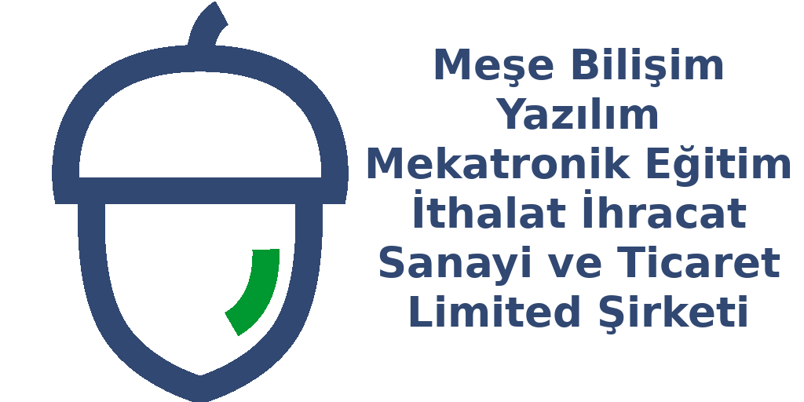
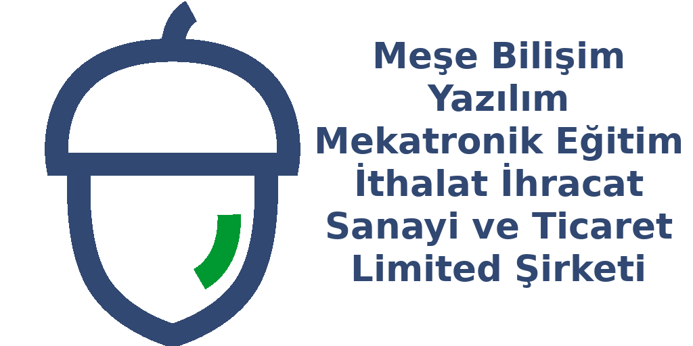

Meşe Bilişim Yazılım Mekatronik Eğitim İthalat İhracat Sanayi ve Ticaret Limited Şirketi 2015 yılında Ankarada kurulmuş, 2017 senesinde Manisa Celal Bayar Üniversitesi Muradiye Kampüs içerisinde bulunan Teknokent e taşınarak Otomasyon, Elektronik, Mekatronik, Yazılım, Yazılım Test, Donanım Test ve Bilişim Sistemleri alanlarında faaliyet göstermektedir.


 
